Arkos · Lattice Lancer
This card is the only pose list. A later frame has to match one of these keys. Native facing is right. The whole sprite flips. One spear. The bronze nasal helm stays on, and the teal eyes stay visible. He is a fist, so the corner step is Close. His own move named Dash is the swift sprint, not that step.
| Book | Value |
|---|---|
| Basic | Lance Thrust · the spear reaches · range 1.9 |
| Body | 918 health · 35.34 damage · 0.78 attacks/s · speed 3.2 · armor 10 · range 1.9 · mana 80 · regen 6 |
| Crit / cooldown | 0.18 crit · 0.84 cooldown scale |
| Cards | Pierce · Might · Nimble |
| Moves | Geodesic · True Line · Dash |
| Stride | Close · he is a fist · 30s · cost 8 |
What stays off the body
- Geodesic's lattice clump leaves the spearhead. It is not painted on the body.
- True Line is the beam already drawn for a straight shot. The spear stays bare.
- Dash's swift is the ground ring. The body only leans into the sprint.
- Close's streak is the lance already drawn for a corner step. It is not his Dash.
Keys
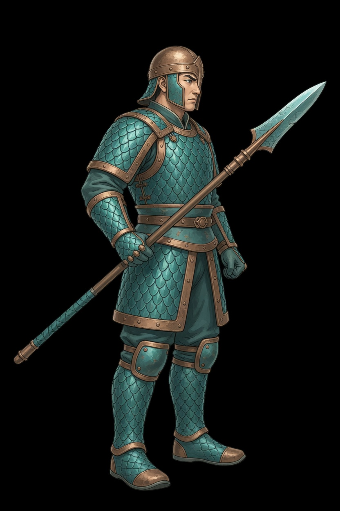
Rest. One spear across the body, both boots planted. This frame opens Lance Thrust, Geodesic, True Line, Dash, and Close.
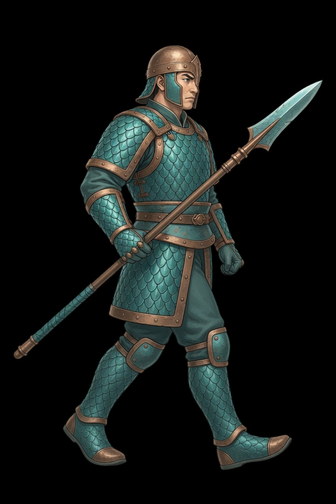
Contact. One boot reaches. The spear stays across the body. These four keys are the whole cycle: contact, pass, other contact, return.
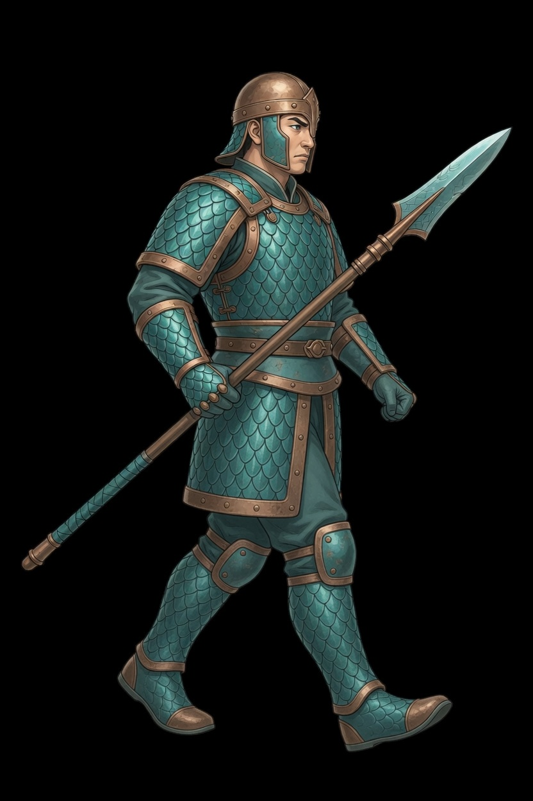
The rear boot swings through. The spear and the helm stay with him.
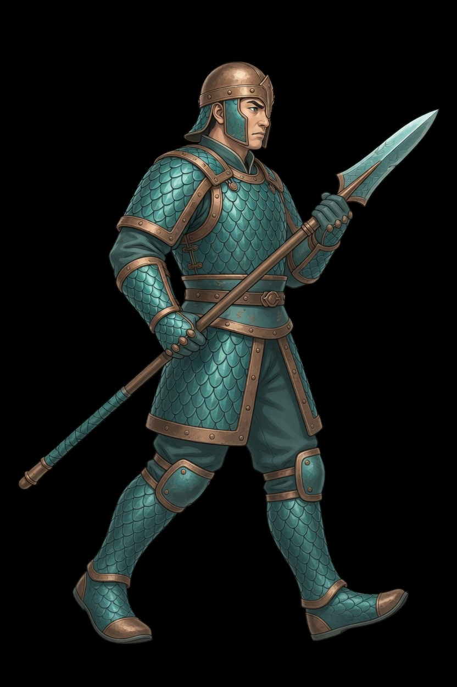
The other boot leads. Same height, same spear, same foot line as the idle.
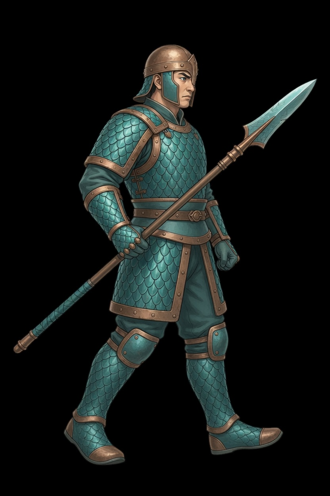
Coming back toward the planted stance. The next frame is the loop.
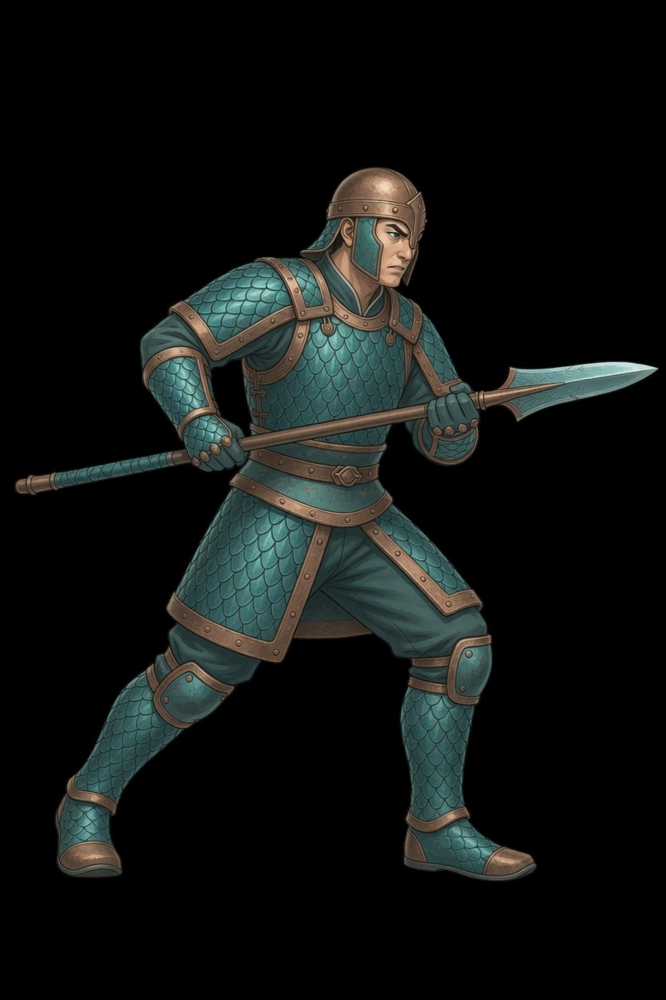
The lunge. Both hands on the shaft, the spearhead leading. Frame 1 and frame 3 are idle.
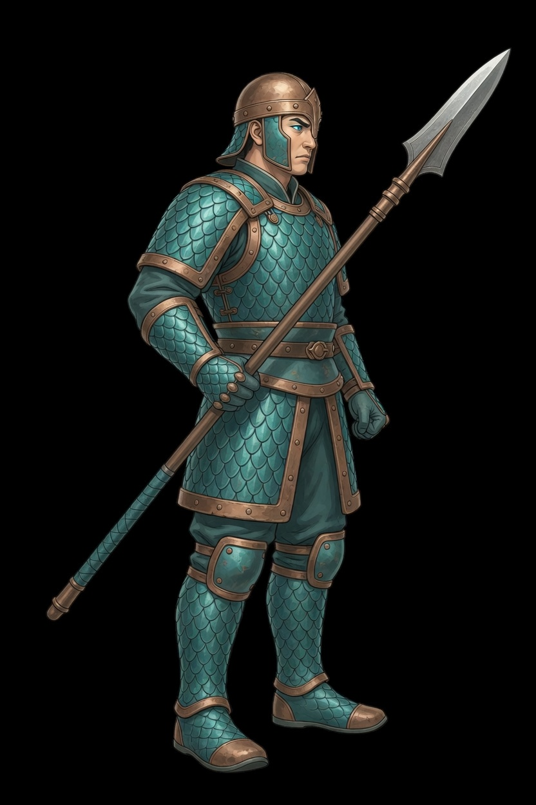
Both boots planted, the spear angled up. The clump that flies is not on this sprite.
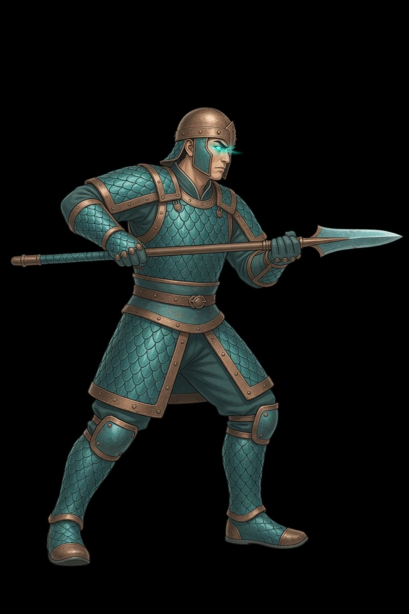
The spear leveled straight at the foe, body braced. The beam is not on this sprite.
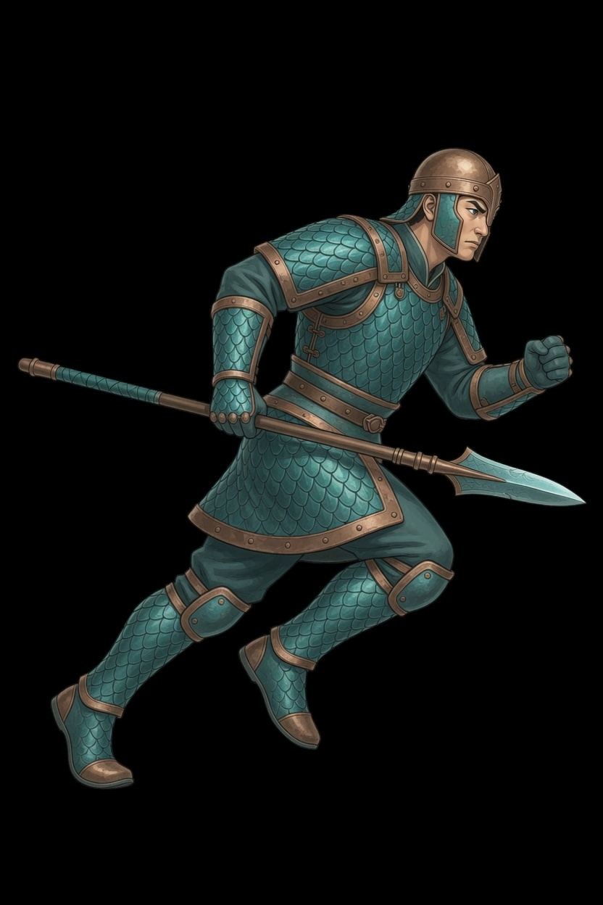
The named sprint. Torso forward, spear tucked along the body. Frame 2 is idle. This is not Close.
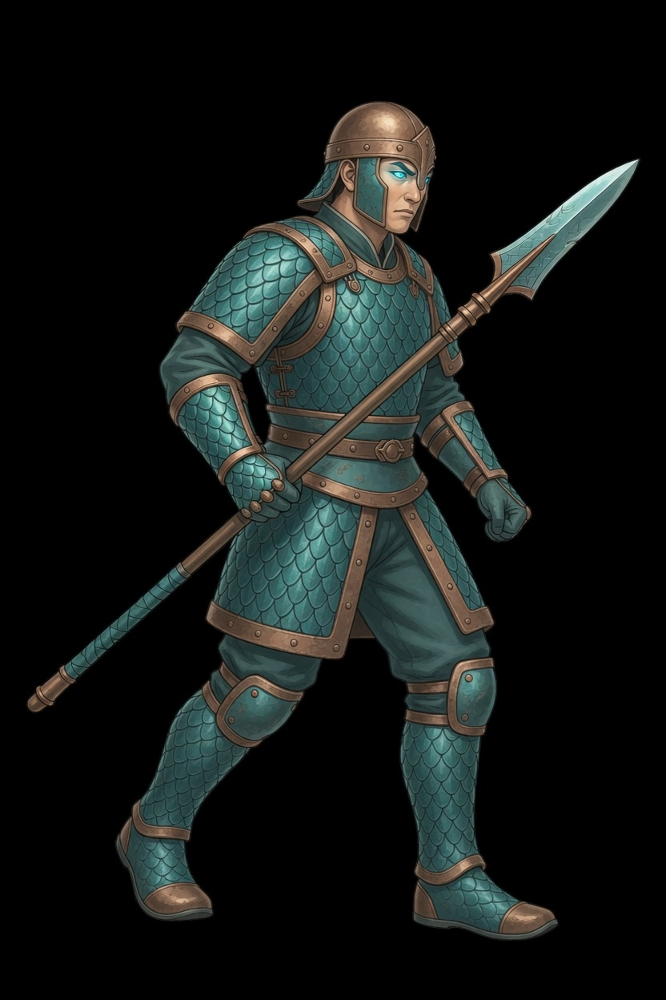
The corner step. Front boot forward, spear across the body. Frame 2 is idle.
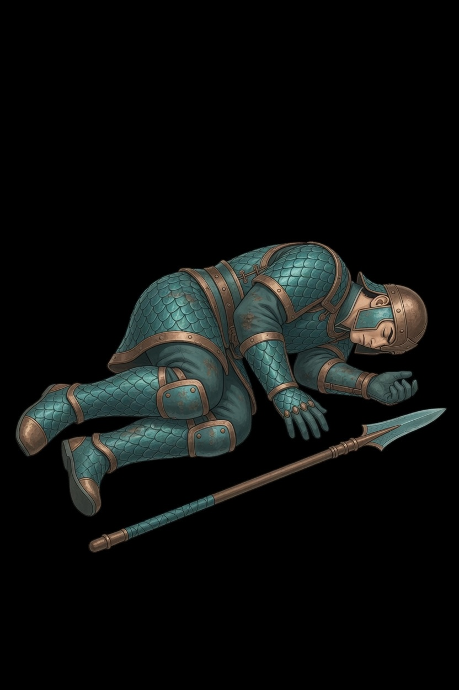
Down on his side, eyes closed, the spear on the ground by his open hand. The clip holds this frame. He is not scaled back up to standing height.
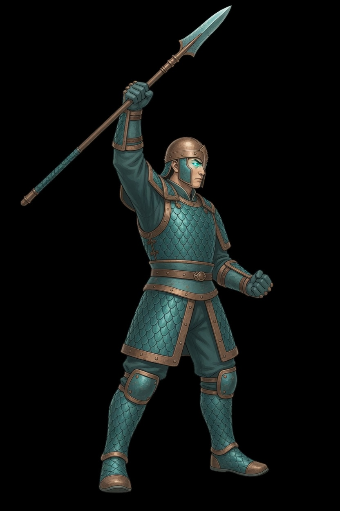
One spear raised, both boots planted, mouth closed. This is not the thrust and not Geodesic.